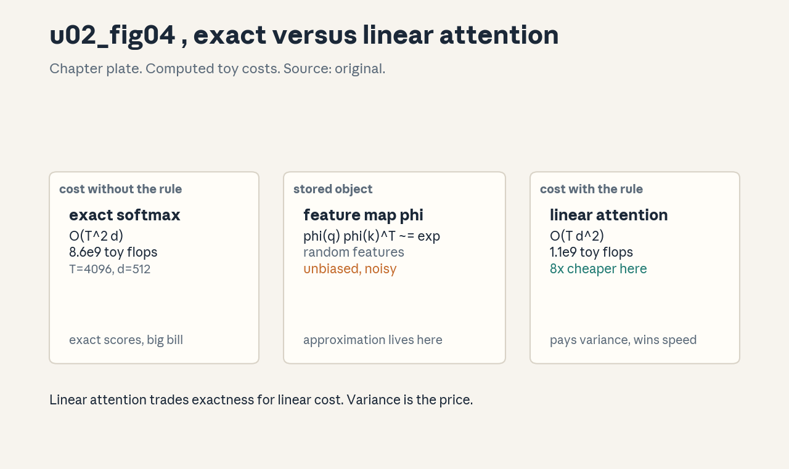
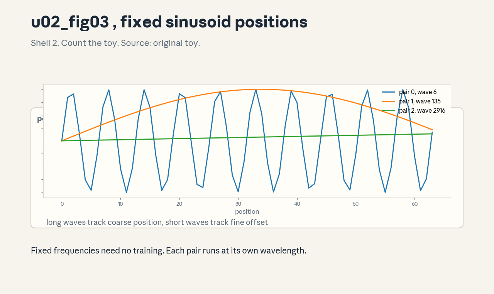
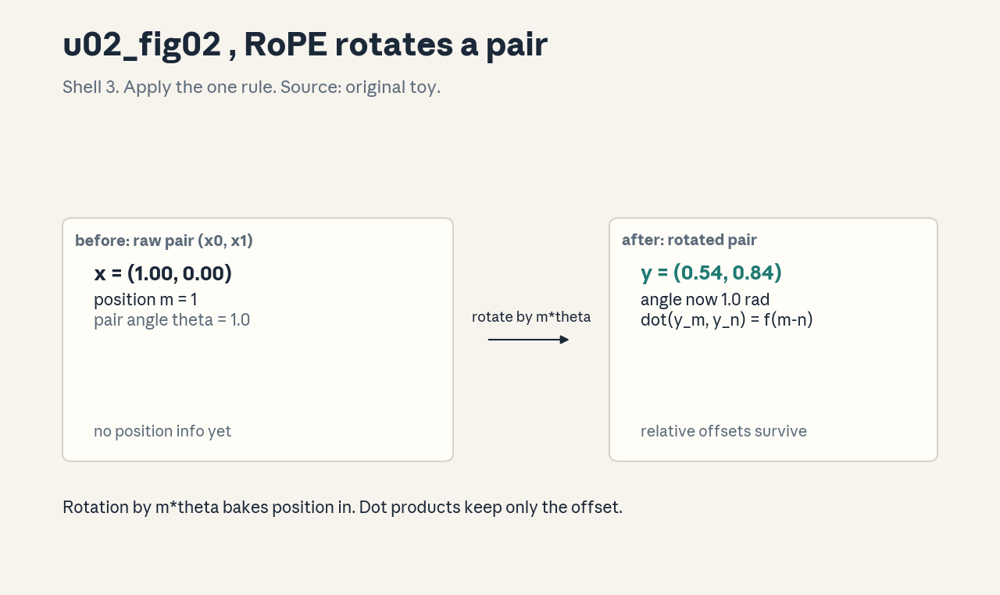

U02 · Transformer variants and positional mechanisms
U02 , Transformer variants and positional mechanisms
Prerequisites: P04, P12, P14. Bridge links in ../prerequisites.md.
Lecture anchor: L2 (Oct 2, 2026). Claim class: OFFICIAL-SYLLABUS for
MHA/MQA/GQA, position embeddings (RoPE and variants), model families.
REQUESTED-BRANCH for attention approximation, cache math detail,
complexity analysis, and failure cases (KV caching is named in L5).
All leaves: PLANNED / SOURCE ATTRIBUTION PENDING until slide or
transcript extraction verifies them.
Notation: see ../notation_and_shapes.md. Glossary: ../glossary.md.
Not yet understood
Concepts this unit uses but does not teach. Each one arrives in a later unit.
- Next-token sampling (U03): temperature, top-k, top-p.
- Training and adaptation (U04): SFT, LoRA, optimizer memory.
- Preference tuning (U05): DPO, RLHF, reward models.
- Reasoning RL (U06): GRPO, verifiers, test-time scaling.
- RAG and agents (U07): retrieval pipelines and ReAct loops.
- LLM evaluation (U08): judging, bias, calibration, intervals.
Local remediation , projections, softmax stability, rotation
Do this block first if diagnostic items D1, D2, or D6 were not full marks.
R0.1 Projection. W in R^{d x d}, x in R^d. y = Wx is a learned linear map: it rotates, scales, and mixes the axes. Q = XW_q means every position’s vector is remapped before it becomes a query. Three different maps (W_q, W_k, W_v) let one vector play three roles.
R0.2 Stable softmax. Compute m = max(z), then exp(z - m) / sum. The shift changes nothing mathematically (it factors out) and prevents overflow. Check: softmax([1000, 1001]) = softmax([0, 1]).
R0.3 2D rotation. R(theta) = [[cos, -sin], [sin, cos]]. R(theta) applied to (1, 0) gives (cos theta, sin theta): length preserved, angle added. R(a)R(b) = R(a+b): rotations compose by adding angles. RoPE is this fact applied per position.
C01: attention approximation
Leaf id cme295-U02-C01. Claim class REQUESTED-BRANCH.
Status PLANNED / SOURCE ATTRIBUTION PENDING.
-
Source mapping, scope, objectives, dependencies. Requested extension: the syllabus names efficient kernels and Flash Attention (L5) but not approximation theory. Scope: replacing exact softmax attention with a cheaper form. Objectives: write the kernel factorization, state the unbiasedness claim, and compute the FLOP ratio on a toy. Depends on P04 (low-rank ideas) and P14.
-
Motivating question and toy. Question: exact attention costs O(T^2 d), what if we never form the T x T matrix? Toy: replace exp(q . k) with phi(q) . phi(k) for a feature map phi. Then attention becomes (phi(Q)(phi(K)^T V)) computed right to left in O(T d^2).
-
Mental model. The softmax kernel is a similarity function. Approximate the similarity with an inner product of random features, the matrix product then associates the other way and the quadratic term disappears. Randomness buys speed, variance is the price.
-
Objects, symbols, units, shapes, assumptions. phi: R^d -> R^m (feature map, m features). Approximation: softmax(QK^T/sqrt(d)) V ~= D^{-1} (phi(Q) (phi(K)^T V)) with row normalizer D. Assumption: E[phi(q) . phi(k)] = exp(q . k / sqrt(d)) (unbiased), the variance is finite and controlled by m.
-
Derivation / mechanism. Performer (Choromanski et al., 2020): draw random directions w_i, phi(x) = exp(w^T x - |x|^2/2) / sqrt(m). Then E[phi(q)^T phi(k)] = exp(q^T k). The attention sum becomes sum_v phi(q)^T phi(k_v) v_v = phi(q)^T (sum_v phi(k_v) v_v^T): compute S = phi(K)^T V once (m x d), then multiply per query. No T x T matrix ever exists.
-
Computed example. From
visuals/render_u02.py(T = 4096, d = 512): exact attention ~8.6e9 toy FLOPs, linear form ~1.1e9, ratio 8.0. The ratio grows with T: at T = 32768 the gap is 64x. Figure:
(chapter plate). -
Algorithm and reference implementation.
linear_attention(Q, K, V, phi): Kf = phi(K) (T x m), S = Kf^T @ V (m x d), z = Kf.sum(0) (m,), return (phi(Q) @ S) / (phi(Q) @ z). Ten lines. The division is the row normalizer. -
Correctness checks and expected output. Check: with m large the output approaches exact softmax attention on random data, the normalizer keeps rows summing to 1, doubling m halves the variance. If rows do not sum to 1, the normalizer is wrong.
-
Complexity, memory, statistical efficiency, stability, costs. Time O(T m d), memory O(m d + T m). Statistically: unbiased but noisy, downstream quality depends on m and the task. Numerically: the exp features can overflow, the -|x|^2/2 term stabilizes them.
-
Nearest alternatives and selection boundaries. Exact attention with Flash Attention (L5/U06 scope) keeps exactness and cuts memory IO. Sparse patterns (local windows) are exact on a subset. Choose approximation when T is huge and some noise is affordable, choose exact + IO-aware kernels otherwise.
-
Failure case, broken assumption, counterexample. Broken assumption: unbiased means good. Counterexample: at small m the variance swamps the signal and training diverges, unbiasedness says nothing about any single run. Always report m and seed sweeps.
-
Research reading and falsifiable extension. Read Choromanski et al. (2020, Performer). Extension: fix T and sweep m on a copy task, find the m where accuracy matches exact attention and report the FLOP ratio at that m.
-
Breadth recall, deep oral ladder, unfamiliar transfer. Recall: write the right-to-left product order. Ladder: define the kernel -> compute the FLOP ratio -> justify unbiasedness -> implement linear_attention -> predict the small-m failure. Transfer: approximate attention over 1M-length genomics, defend m.
-
Lab/exercises with answers separated. E1: FLOP ratio at T = 1024, d = 512, m = 256. E2: why does the normalizer need phi(K) summed, not phi(Q)? E3: what breaks if phi can be negative? Key:
../keys/u02_answers.mdR1-R3. -
Visual units, provenance, accessibility, audit rows. Chapter plate
u02_fig04.png: left cost without the rule (exact), center the stored object (feature map), right cost with the rule (linear), footer the tradeoff. Source: original. Numbers fromrender_u02.py.
C02: MHA
Leaf id cme295-U02-C02. Claim class OFFICIAL-SYLLABUS.
Status PLANNED / SOURCE ATTRIBUTION PENDING.
-
Source mapping, scope, objectives, dependencies. Maps to L2 “MHA, MQA, GQA”. Scope: multi-head attention proper. Objectives: write the head equations, trace per-head shapes, and explain why heads help. Depends on P14 and U01 C08.
-
Motivating question and toy. Question: one attention pattern must track syntax, coreference, and position at once, can it? Toy: d = 64, h = 4, so d_k = 16. Each head learns its own Q, K, V maps and its own pattern, the outputs concatenate.
-
Mental model. Heads are parallel attention workers with private projections. Each sees the same input through different lenses. Concatenation plus a final projection mixes their votes.
-
Objects, symbols, units, shapes, assumptions. Per head i: Q_i = XW_q^i, K_i = XW_k^i, V_i = XW_v^i, each (B, T, d_k). Head output O_i = softmax(Q_i K_i^T / sqrt(d_k)) V_i. Concat: (B, T, d), then W_o: (d, d). Assumption: d divisible by h.
-
Derivation / mechanism. Splitting d into h subspaces lets each head specialize: the score softmax runs inside a d_k dimensional space, so heads do not interfere. The 1/sqrt(d_k) scale keeps dot products O(1) at init, so the softmax starts diffuse instead of saturated.
-
Computed example. d = 64, h = 4: per-head parameters 3 * 64 * 16 = 3072 for QKV plus 64*64 = 4096 for W_o, total 7168 per layer. Scale check: q, k ~ N(0, 1) in 16 dims gives q.k ~ N(0, 16), dividing by sqrt(16) = 4 restores unit scale.
-
Algorithm and reference implementation.
mha(X): for each head: project, score, mask, softmax, mix, concat, return concat @ W_o. Twelve lines in numpy with explicit head loops (slow, clear). -
Correctness checks and expected output. Check: output shape (B, T, d), with h = 1 the code matches single-head attention, permuting head order with matching W_o columns is invariant. If heads collapse to identical patterns, init or the task is at fault.
-
Complexity, memory, statistical efficiency, stability, costs. Time O(T^2 d) (h heads x d_k = d total width). Memory O(h T^2) scores. More heads at fixed d means thinner heads, past ~d_k = 32 the heads starve.
-
Nearest alternatives and selection boundaries. Single-head wide attention (cheaper, less expressive). Multi-query (C03) for inference. Choose MHA for training quality, variants for serving.
-
Failure case, broken assumption, counterexample. Broken assumption: heads specialize. Counterexample: on some tasks heads learn redundant copies, pruning studies remove most heads with small loss. Specialization is an opportunity, not a guarantee.
-
Research reading and falsifiable extension. Read Vaswani et al. (2017) sections 3.2.2. Extension: measure per-head pattern diversity (mean pairwise distance of attention maps) across layers of a tiny model, report where redundancy peaks.
-
Breadth recall, deep oral ladder, unfamiliar transfer. Recall: why divide by sqrt(d_k)? Ladder: define a head -> trace shapes -> justify the scale -> implement mha -> predict the head-collapse case. Transfer: heads for multi-channel sensor fusion, defend h.
-
Lab/exercises with answers separated. E1: d_k for d = 768, h = 12. E2: parameters of MHA at d = 128, h = 4. E3: what happens to the softmax at init without the scale? Key:
../keys/u02_answers.mdR4-R6. -
Visual units, provenance, accessibility, audit rows. Atomic units: head, projection, pattern. Lesson plate: before (one mixed pattern) -> rule (split into h heads) -> after (h patterns, concat). Logged as a plate spec with the computed shapes above.
C03: MQA
Leaf id cme295-U02-C03. Claim class OFFICIAL-SYLLABUS.
Status PLANNED / SOURCE ATTRIBUTION PENDING.
-
Source mapping, scope, objectives, dependencies. Maps to L2 “MHA, MQA, GQA”. Scope: multi-query attention. Objectives: state what is shared, compute the KV cache saving, and name the quality cost. Depends on C02.
-
Motivating question and toy. Question: at decode time the bottleneck is the KV cache load, not math, what if all query heads shared one KV head? Toy: 32 query heads, 1 KV head. The cache shrinks 32x, the queries keep their private projections.
-
Mental model. Queries stay diverse, keys and values become a shared bulletin board. Every head reads the same board with its own question. Memory traffic falls, representational bandwidth falls too.
-
Objects, symbols, units, shapes, assumptions. K, V: (B, 1, T, d_k) broadcast to h heads. Q_i stays (B, T, d_k) per head. Assumption: one KV head can serve all query heads without catastrophic quality loss (true for large models, shaky for small).
-
Derivation / mechanism. Cache bytes = 2 (K and V) * layers * kv_heads * d_k * T * bytes. MQA sets kv_heads = 1. The attention math is unchanged per head, only the K/V projections are shared. Training usually still uses MHA and converts, or trains MQA directly with care.
-
Computed example. From
visuals/render_u02.py(32 layers, 32 query heads, d_k = 128, T = 2048, fp16): MHA cache 1024 MiB, MQA cache 32 MiB, ratio 32.0. Figure: .
. -
Algorithm and reference implementation.
mqa(X): K = XW_k, V = XW_v (single head each), for each query head i: scores = Q_i K^T / sqrt(d_k), mix V. The K/V projection code is identical to one MHA head. -
Correctness checks and expected output. Check: cache bytes match the formula, with kv_heads = h the code reduces to MHA, outputs equal MHA only if the weights were trained that way. If quality drops sharply at small scale, the shared board is too narrow.
-
Complexity, memory, statistical efficiency, stability, costs. Decode memory traffic falls ~32x in the toy, arithmetic barely changes. Quality: large models absorb the sharing, small models lose accuracy on retrieval-heavy tasks.
-
Nearest alternatives and selection boundaries. GQA (C04) is the middle ground. Choose MQA for maximum inference economy on large models, GQA when quality must stay near MHA.
-
Failure case, broken assumption, counterexample. Broken assumption: sharing never hurts. Counterexample: small models trained with MQA from scratch underperform MHA on benchmarks, the capacity cut bites when the model is already small.
-
Research reading and falsifiable extension. Read Shazeer (2019, “Fast Transformer Decoding: One Write-Head is All You Need”). Extension: train tiny MHA vs MQA models at fixed parameters, measure the accuracy gap and the cache ratio.
-
Breadth recall, deep oral ladder, unfamiliar transfer. Recall: what is shared in MQA? Ladder: define the sharing -> compute the 32x -> justify the quality claim -> implement mqa -> predict the small-model failure. Transfer: MQA for a streaming translation cache, defend the choice.
-
Lab/exercises with answers separated. E1: cache bytes for 24 layers, 16 heads, d_k = 64, T = 4096, fp16, MQA. E2: ratio MHA/MQA there. E3: why does the arithmetic cost barely change? Key:
../keys/u02_answers.mdR7-R9. -
Visual units, provenance, accessibility, audit rows. Figure
u02_fig01.png: Shell 3, one rule (share the KV head), before MHA 32 KV heads, after MQA 1 KV head, cache bytes computed inrender_u02.py. Alt text: “Plate showing KV head counts and cache sizes for MHA, GQA, and MQA.”
C04: GQA
Leaf id cme295-U02-C04. Claim class OFFICIAL-SYLLABUS.
Status PLANNED / SOURCE ATTRIBUTION PENDING.
-
Source mapping, scope, objectives, dependencies. Maps to L2 “MHA, MQA, GQA”. Scope: grouped-query attention. Objectives: state the grouping, compute the cache size, and place GQA between MHA and MQA. Depends on C02, C03.
-
Motivating question and toy. Question: MQA is fast but costs quality, MHA is quality but slow, is there a dial? Toy: 32 query heads in 8 groups, each group of 4 shares one KV head. Cache falls 4x vs MHA.
-
Mental model. GQA is MHA with sharing and MQA with groups. The group count G is the knob: G = h gives MHA, G = 1 gives MQA. Public example: Llama-2 70B uses G = 8 groups (public model fact, not course content).
-
Objects, symbols, units, shapes, assumptions. kv_heads = G. Query head i uses KV head floor(i / (h / G)). Cache bytes from the C03 formula with kv_heads = G. Assumption: groups are contiguous in head order.
-
Derivation / mechanism. Same code as MQA with G KV heads. Upcasting: an MHA checkpoint converts to GQA by mean-pooling KV heads within each group, then a short continued training run recovers quality. This made GQA the practical default for open large models.
-
Computed example. Same toy as C03 (32 layers, 32 heads, d_k = 128, T = 2048, fp16): GQA with G = 8 gives 256 MiB vs MHA 1024 MiB vs MQA 32 MiB. Figure:
. -
Algorithm and reference implementation.
gqa(X, G): compute G KV heads, repeat each KV head h/G times along the head axis, run standard MHA math. The repeat is a view, not a copy. -
Correctness checks and expected output. Check: G = h reproduces MHA exactly, G = 1 reproduces MQA, cache bytes match the formula. If G does not divide h, the grouping is invalid.
-
Complexity, memory, statistical efficiency, stability, costs. Cache scales with G. Quality sits between MHA and MQA, at G = 8 the gap to MHA is small in published reports.
-
Nearest alternatives and selection boundaries. MQA for max economy, MHA for max quality, GQA as the default compromise. Choose G by the memory budget: the largest G that fits.
-
Failure case, broken assumption, counterexample. Broken assumption: mean-pooling KV heads is harmless. Counterexample: pooling without continued training drops quality, the “free conversion” story needs the recovery run.
-
Research reading and falsifiable extension. Read Ainslie et al. (2023, GQA). Extension: upcast a tiny MHA to GQA with and without continued training, measure the gap.
-
Breadth recall, deep oral ladder, unfamiliar transfer. Recall: what does G control? Ladder: define groups -> compute 256 MiB -> justify the compromise -> implement gqa -> predict the no-recovery failure. Transfer: pick G for a 24 GB card, show the arithmetic.
-
Lab/exercises with answers separated. E1: cache for G = 4 in the C03 toy. E2: which G recovers MHA? E3: why is the repeat a view, and why does that matter? Key:
../keys/u02_answers.mdR10-R12. -
Visual units, provenance, accessibility, audit rows. Same figure as C03 (
u02_fig01.png), the GQA column is the middle panel. Audit row shared.
C05: learned/fixed positions
Leaf id cme295-U02-C05. Claim class OFFICIAL-SYLLABUS.
Status PLANNED / SOURCE ATTRIBUTION PENDING.
-
Source mapping, scope, objectives, dependencies. Maps to L2 “Position embeddings”. Scope: absolute position schemes before RoPE. Objectives: write the sinusoidal formula, compute wavelengths, and contrast learned vs fixed. Depends on P03.
-
Motivating question and toy. Question: attention is permutation invariant, how does position 5 know it is fifth? Toy: add a position vector p_m to each token vector. Learned: p_m is a table row. Fixed: p_m from sines and cosines.
-
Mental model. Position codes are name tags for slots. Learned tags adapt to the data but stop at the trained length. Fixed sinusoid tags follow a formula, so they extend to any length, with different frequencies tracking coarse vs fine position.
-
Objects, symbols, units, shapes, assumptions. p_m in R^d for position m. Sinusoid: p_{m,2i} = sin(m / 10000^{2i/d}), p_{m,2i+1} = cos(m / 10000^{2i/d}). Assumption: addition to the token vector does not destroy content (the model learns to separate them).
-
Derivation / mechanism. Wavelength of pair i: lambda_i = 2 pi * 10000^{2i/d}. Low i: short waves track exact offsets, high i: long waves track coarse region. The dot product of two codes depends on the offset m - n plus absolute terms, that absolute residue is why relative schemes (C06, C07) came later.
-
Computed example. From
visuals/render_u02.py(d = 6): wavelengths 6.3, 135.4, 2916.4. The curves over 64 positions show the fast pair oscillating and the slow pair barely moving. Figure:
. -
Algorithm and reference implementation.
sinusoid(T, d): for m in range(T), i in range(d//2): fill sin and cos. Five lines. Learned:nn.Embedding(T_max, d). -
Correctness checks and expected output. Check: p_0 has sin(0) = 0 in even slots, cos(0) = 1 in odd slots, shifting m by lambda_i returns the pair to itself. If p_m is all zeros, the frequency base is wrong.
-
Complexity, memory, statistical efficiency, stability, costs. Fixed: no parameters. Learned: T_max * d parameters and a hard wall at T_max. Both add O(T d) once.
-
Nearest alternatives and selection boundaries. Relative schemes (C06, C07) for extrapolation. Choose learned for fixed short contexts (BERT), sinusoid when zero extra parameters matter, RoPE for modern decoders.
-
Failure case, broken assumption, counterexample. Broken assumption: learned positions extend past T_max. Counterexample: position T_max + 5 has no trained row, the model sees garbage and generation degrades. Extrapolation needs relative codes.
-
Research reading and falsifiable extension. Read Vaswani et al. (2017) section 3.5. Extension: train a tiny model with learned positions, then test at 2x length, measure the accuracy cliff and locate it.
-
Breadth recall, deep oral ladder, unfamiliar transfer. Recall: write the sinusoid formula. Ladder: define the code -> compute a wavelength -> justify fixed vs learned -> implement sinusoid -> predict the extrapolation cliff. Transfer: position codes for 2D image patches, state the change.
-
Lab/exercises with answers separated. E1: wavelength for i = 0, d = 512. E2: parameters of learned positions for T_max = 512, d = 768. E3: why does addition (not concat) work? Key:
../keys/u02_answers.mdR13-R15. -
Visual units, provenance, accessibility, audit rows. Figure
u02_fig03.png: Shell 2, count the toy (wavelengths), curves over 64 positions. Source: original toy. Numbers fromrender_u02.py.
C06: RoPE rotation
Leaf id cme295-U02-C06. Claim class OFFICIAL-SYLLABUS.
Status PLANNED / SOURCE ATTRIBUTION PENDING.
-
Source mapping, scope, objectives, dependencies. Maps to L2 “Position embeddings (RoPE and variants)”. Scope: rotary embeddings. Objectives: write the rotation, prove the relative property, and rotate a pair by hand. Depends on C05 and R0.3.
-
Motivating question and toy. Question: absolute codes leave an absolute residue, can position enter through relative offsets only? Toy: pair (x_0, x_1) at position m rotated by angle m * theta. The dot product of rotated pairs depends only on the offset.
-
Mental model. RoPE spins each 2D slice of Q and K by an angle proportional to position. Two vectors from positions m and n meet with relative angle (m - n) * theta. Absolute position disappears from the dot product, only distance survives.
-
Objects, symbols, units, shapes, assumptions. For pair i: theta_i = base^{-2i/d} (base often 10000). Rotation R(m theta_i) applied to each (x_{2i}, x_{2i+1}) of Q and K. Applied to Q and K only, not V. Assumption: even d, pairs are independent.
-
Derivation / mechanism. (R(m t) q) . (R(n t) k) = q^T R(m t)^T R(n t) k = q^T R((n-m) t) k. The transpose flips the sign, rotations compose by addition (R0.3), and the result is a function of (n - m). No absolute m or n remains.
-
Computed example. From
visuals/render_u02.py: x = (1, 0), m = 1, theta = 1.0 gives y = (0.5403, 0.8415) = (cos 1, sin 1). Relative check R(1) R(2)^T vs R(-1): max error 1.11e-16 (exact to machine precision). Figure:
. -
Algorithm and reference implementation.
rope(x, m): reshape last axis to pairs, for each pair apply the 2x2 rotation with angle m * theta_i. Eight lines. Precompute cos/sin tables per position for speed. -
Correctness checks and expected output. Check: m = 0 is the identity, the relative property holds to 1e-12, norms are preserved. If norms change, the rotation matrix is wrong.
-
Complexity, memory, statistical efficiency, stability, costs. O(T d) extra, no parameters. Long angles (large m * theta_i) wrap around, tiny theta_i pairs barely rotate at trained lengths and misbehave past them (extrapolation, C12).
-
Nearest alternatives and selection boundaries. ALiBi (C07) for extrapolation without rotation. Learned relative biases for short contexts. Choose RoPE as the modern default, tune the base for long contexts.
-
Failure case, broken assumption, counterexample. Broken assumption: RoPE extrapolates to any length. Counterexample: positions far past training see angle combinations never seen, perplexity explodes. Fixes: larger base, position interpolation (U03 C03).
-
Research reading and falsifiable extension. Read Su et al. (2021, RoFormer). Extension: train a tiny RoPE model, evaluate perplexity at 1x, 2x, 4x length, find the cliff and test whether a larger base moves it.
-
Breadth recall, deep oral ladder, unfamiliar transfer. Recall: why is RoPE applied to Q and K but not V? Ladder: define the rotation -> rotate the toy -> prove the relative property -> implement rope -> predict the extrapolation cliff. Transfer: RoPE for 1D audio frames, state what changes.
-
Lab/exercises with answers separated. E1: rotate (0, 1) by m = 2, theta = 0.5. E2: prove the norm is preserved. E3: what breaks if RoPE is also applied to V? Key:
../keys/u02_answers.mdR16-R18. -
Visual units, provenance, accessibility, audit rows. Figure
u02_fig02.png: Shell 3, one rule (rotate by m*theta), before raw pair, after rotated pair. Source: original toy. Numbers fromrender_u02.py. Alt text: “Plate showing a 2D vector before and after rotary position embedding.”
C07: relative effects
Leaf id cme295-U02-C07. Claim class OFFICIAL-SYLLABUS (“RoPE and
variants”).
Status PLANNED / SOURCE ATTRIBUTION PENDING.
-
Source mapping, scope, objectives, dependencies. Maps to L2 “Position embeddings (RoPE and variants)”. Scope: relative position schemes beyond RoPE. Objectives: write the T5 bias and ALiBi penalty, and explain why relative codes extrapolate. Depends on C05, C06.
-
Motivating question and toy. Question: RoPE’s angles still wrap past training length, is there a scheme with no angles at all? Toy: score s_{ij} = q_i . k_j - m_h * |i - j| (ALiBi). Far pairs pay a linear penalty, no position vector exists.
-
Mental model. Relative schemes tax distance directly. T5 adds a learned bucketed bias per offset. ALiBi subtracts a fixed per-head slope times distance. Both make “far” mean “unlikely” without any absolute code.
-
Objects, symbols, units, shapes, assumptions. Bias B[i, j] = f(i - j), added to scores before softmax. ALiBi slopes m_h = 2^{-8h/H} per head h. Assumption: distance penalty is enough, exact far-field content matters less.
-
Derivation / mechanism. Adding B[i,j] shifts the softmax: positions far apart get exponentially less weight (ALiBi) or a learned offset (T5 buckets: 32 buckets, log-spaced past 128). Because the rule uses only i - j, it applies at any length: extrapolation is structural, not learned.
-
Computed example. Toy: 4 positions, head slope m = 0.5. Penalties |i-j| * 0.5: distance 3 costs 1.5 logit points, i.e. a factor exp(-1.5) ~= 0.22 in weight. The near field dominates by construction.
-
Algorithm and reference implementation.
alibi_bias(T, H): for h, i, j: B[h, i, j] = -m_h * abs(i - j), causal entries keep -inf. Six lines. Add to scores before softmax. -
Correctness checks and expected output. Check: B[i, i] = 0, B is symmetric in |i-j|, larger slopes penalize harder. If far weights do not shrink, the sign is flipped.
-
Complexity, memory, statistical efficiency, stability, costs. O(H T^2) bias, usually fused. No parameters (ALiBi) or tiny tables (T5). Extrapolation is the win, fine distance control is the loss vs learned biases.
-
Nearest alternatives and selection boundaries. RoPE for the modern default with interpolation fixes. Choose ALiBi when zero-shot length extrapolation matters more than matching trained-length quality.
-
Failure case, broken assumption, counterexample. Broken assumption: distance penalty never hurts. Counterexample: tasks needing exact far recall (long-range copying) suffer under strong slopes, the penalty that helps extrapolation hurts retrieval.
-
Research reading and falsifiable extension. Read Raffel et al. (2020, T5) and Press et al. (2022, ALiBi). Extension: compare RoPE vs ALiBi perplexity at 2x trained length on a tiny model, state which degrades less.
-
Breadth recall, deep oral ladder, unfamiliar transfer. Recall: write the ALiBi bias. Ladder: define the bias -> compute the distance-3 penalty -> justify extrapolation -> implement alibi_bias -> predict the far-recall failure. Transfer: relative bias for code with nesting depth, defend the distance metric.
-
Lab/exercises with answers separated. E1: ALiBi weight ratio for distances 1 vs 4 at slope 1.0. E2: why is the bias added before softmax? E3: T5 bucket count vs exact offsets: what is lost? Key:
../keys/u02_answers.mdR19-R21. -
Visual units, provenance, accessibility, audit rows. Atomic units: offset, penalty, weight. Lesson plate: before (flat scores) -> rule (subtract slope * distance) -> after (near-field weights). Logged as a plate spec with the computed toy.
C08: encoder/decoder layouts
Leaf id cme295-U02-C08. Claim class OFFICIAL-SYLLABUS (“Transformer
model families”).
Status PLANNED / SOURCE ATTRIBUTION PENDING.
-
Source mapping, scope, objectives, dependencies. Maps to L2 “Transformer model families”. Scope: the three layouts. Objectives: state the mask and attention pattern of each, and route a task to the right layout. Depends on U01 C08, C09.
-
Motivating question and toy. Question: BERT reads both ways, GPT reads left to right, T5 has two stacks, which wiring does what? Toy: the sentence “the cat sat”. Encoder: every position sees every position. Decoder: position i sees <= i. Encoder-decoder: decoder queries the encoder’s final states.
-
Mental model. Encoder = read the whole input (bidirectional). Decoder = write left to right (causal). Encoder-decoder = read with one stack, write with another, connected by cross-attention. The mask is the layout.
-
Objects, symbols, units, shapes, assumptions. Encoder self scores: (T, T) unmasked. Decoder self scores: (T, T) causal. Cross scores: (T_dec, T_enc), queries from decoder, keys/values from encoder. Assumption: the task’s information flow matches the mask.
-
Derivation / mechanism. Cross-attention: Q from decoder states, K/V from encoder outputs, each generated token conditions on the full source. No new math beyond C07 attention with split sources. The encoder runs once, the decoder runs per step.
-
Computed example. Shapes: source S = 16, target T = 8, d = 64, h = 4. Cross scores: (B, 4, 8, 16). Encoder cost paid once, decoder pays per step. That asymmetry is why decoders dominate serving cost.
-
Algorithm and reference implementation.
enc_dec(src, tgt): E = encoder(src) (unmasked), for each target step: causal self-attention on decoded prefix, cross-attention to E, predict next token. The cross call reuses C07 attend with split inputs. -
Correctness checks and expected output. Check: encoder mask is all zeros (or padding only), decoder mask is causal, cross mask allows all source positions. If the decoder sees future targets, the target mask is wrong.
-
Complexity, memory, statistical efficiency, stability, costs. Encoder: O(S^2). Decoder: O(T^2 + T*S). Two stacks = more parameters than one for the same depth.
-
Nearest alternatives and selection boundaries. Decoder-only (GPT) for open generation, encoder-only (BERT) for understanding/classification, encoder-decoder for sequence-to-sequence with a distinct source. Choose by whether the input needs full bidirectional reading.
-
Failure case, broken assumption, counterexample. Broken assumption: bidirectional is always better for understanding. Counterexample: for generation, bidirectional targets leak the future (C09), the layout must match the task’s causality.
-
Research reading and falsifiable extension. Read Devlin et al. (2019, BERT) and Radford et al. (2018/2019, GPT). Extension: train encoder-only vs decoder-only tiny models on a classification task at fixed parameters, state the winner.
-
Breadth recall, deep oral ladder, unfamiliar transfer. Recall: draw the three masks. Ladder: define each layout -> trace the shapes -> justify the cross wiring -> implement enc_dec -> predict the bidirectional-generation leak. Transfer: layout for speech-to-text, defend the choice.
-
Lab/exercises with answers separated. E1: cross-attention score shape for S = 32, T = 16, h = 4, B = 2. E2: which stack runs once vs per step? E3: why cannot BERT generate left to right? Key:
../keys/u02_answers.mdR22-R24. -
Visual units, provenance, accessibility, audit rows. Atomic units: encoder stack, decoder stack, cross edge. Architecture plate: named boxes (encoder, decoder, cross-attention) and named edges (self, cross). Logged as a plate spec.
C09: BERT derivatives
Leaf id cme295-U02-C09. Claim class OFFICIAL-SYLLABUS (“Transformer
model families”).
Status PLANNED / SOURCE ATTRIBUTION PENDING.
-
Source mapping, scope, objectives, dependencies. Maps to L2 “Transformer model families”. Scope: the BERT family tree. Objectives: state MLM and NSP, list RoBERTa’s changes, and explain distillation. Depends on C08, U01 C11.
-
Motivating question and toy. Question: no labels exist for raw text, how does an encoder learn anything? Toy: “the [MASK] sat”. The model predicts “cat” from both sides. That is masked language modeling.
-
Mental model. MLM: hide 15% of tokens, predict them from context. NSP (original BERT): predict whether sentence B follows A. RoBERTa: drop NSP, train longer, bigger batches, more data. DistilBERT: a small student mimics a big teacher’s outputs.
-
Objects, symbols, units, shapes, assumptions. MLM loss: cross-entropy on masked positions only. NSP loss: binary cross-entropy on the [CLS] vector. Assumption: bidirectional context helps understanding tasks, generation is out of scope.
-
Derivation / mechanism. MLM gradient flows only through masked positions, the rest are context. Distillation loss: student matches teacher logits (soft targets, temperature T) plus the true labels. Soft targets carry the teacher’s uncertainty (“dark knowledge”).
-
Computed example. Mask 15% of T = 128: ~19 positions train per sequence, 109 are context only. DistilBERT keeps ~97% of BERT’s GLUE score at 40% of the parameters (published figures, public knowledge).
-
Algorithm and reference implementation.
mlm_loss(logits, targets, mask): gather logits at masked positions, cross entropy, mean. Four lines. The mask selects the training positions. -
Correctness checks and expected output. Check: loss only on masked positions, 15% masking rate holds on average, [MASK] never appears at fine-tune time (the 80/10/10 corruption rule handles the mismatch). If all positions train, the mask is broken.
-
Complexity, memory, statistical efficiency, stability, costs. Only 15% of positions produce loss: sample-inefficient vs causal LM (100% of positions train). Bidirectional context is the compensation.
-
Nearest alternatives and selection boundaries. Causal LM (GPT) for generation, MLM for understanding. RoBERTa over BERT when training from scratch. Choose MLM for classification, NER, retrieval encoders.
-
Failure case, broken assumption, counterexample. Broken assumption: NSP helps. Counterexample: RoBERTa removed NSP with no loss (later work: the signal was mostly topic, not order). Pretext tasks need ablations, not faith.
-
Research reading and falsifiable extension. Read Devlin et al. (2019), Liu et al. (2019, RoBERTa), Sanh et al. (2019, DistilBERT). Extension: ablate NSP on a tiny BERT, measure downstream accuracy with and without it.
-
Breadth recall, deep oral ladder, unfamiliar transfer. Recall: what do MLM and NSP predict? Ladder: define MLM -> compute the 15% -> justify bidirectionality -> implement mlm_loss -> critique NSP. Transfer: MLM for protein sequences, defend the mask rate.
-
Lab/exercises with answers separated. E1: train positions for T = 512 at 15%. E2: why 80/10/10 corruption? E3: distillation temperature effect on soft targets. Key:
../keys/u02_answers.mdR25-R27. -
Visual units, provenance, accessibility, audit rows. Atomic units: mask, prediction, family edge. Lesson plate: before (masked sentence) -> rule (predict from both sides) -> after (filled token). Logged as a plate spec.
C10: cache differences
Leaf id cme295-U02-C10. Claim class REQUESTED-BRANCH (KV caching is
named in L5, the per-layout math here is the branch).
Status PLANNED / SOURCE ATTRIBUTION PENDING.
-
Source mapping, scope, objectives, dependencies. Branch from L5 “KV caching”. Scope: what each layout caches. Objectives: compute the cache for a layout, contrast prefill and decode, and state what encoder-decoder caches. Depends on C03, C08.
-
Motivating question and toy. Question: generating token 500 recomputes keys for tokens 1..499 unless we store them, what exactly is stored? Toy: decoder-only, 32 layers, 1 KV head (MQA), d_k = 128, T = 2048, fp16: 32 MiB (from C03).
-
Mental model. The cache is the past, materialized. Prefill: process the prompt in parallel, write all K/V. Decode: for each new token, compute one Q/K/V, append, attend over the cache. The cache turns O(T^2) rework into O(T) appends.
-
Objects, symbols, units, shapes, assumptions. Per layer: K_cache, V_cache: (B, kv_heads, T_cached, d_k). Bytes from the C03 formula. Assumption: the cache holds exact past K/V (no eviction), batch size fixed during decode.
-
Derivation / mechanism. Without cache, step t recomputes K/V for t tokens: total O(T^2) projection work. With cache, step t projects 1 token: O(T) total. Attention over the cache is still O(T) per step (unavoidable: the new token reads the past), but the projections stop repeating.
-
Computed example. The C03 toy: MHA 1024 MiB, GQA-8 256 MiB, MQA 32 MiB at T = 2048. Encoder-decoder: the encoder cache is written once (S positions) and read by every decode step, the decoder self-cache grows per step. Prefix sharing across requests multiplies the win.
-
Algorithm and reference implementation.
decode_step(x_new, cache): q, k, v = project(x_new), cache.append(k, v), a = softmax(q @ cache.K^T / sqrt(d)), return a @ cache.V. Six lines. Prefill is the same loop over the prompt without sampling. -
Correctness checks and expected output. Check: cached decode matches uncached forward to 1e-5, cache bytes match the formula, appending preserves order. If outputs diverge, the position indices or the mask are stale.
-
Complexity, memory, statistical efficiency, stability, costs. Time per step O(T d) attention + O(d^2) projections. Memory: the cache formula. The cache is the serving memory wall, that is why MQA/GQA exist.
-
Nearest alternatives and selection boundaries. Recompute everything (simple, slow). Paged/quantized caches (U06 scope). Choose caching always for serving, the only question is the layout and dtype.
-
Failure case, broken assumption, counterexample. Broken assumption: the cache matches the current prompt. Counterexample: prefix caching with a stale entry serves another user’s context, cache keys must include the full prefix identity. Correctness first, sharing second.
-
Research reading and falsifiable extension. Read Pope et al. (2023, efficient TPU inference) for the cache math. Extension: measure per-token latency with and without cache on a tiny model, report the crossover length where caching wins.
-
Breadth recall, deep oral ladder, unfamiliar transfer. Recall: what is stored per layer? Ladder: define the cache -> compute 32 MiB -> justify prefill/decode split -> implement decode_step -> predict the stale-prefix failure. Transfer: cache for a streaming ASR decoder, defend the eviction rule.
-
Lab/exercises with answers separated. E1: cache bytes for 12 layers, 4 KV heads, d_k = 64, T = 1024, fp16. E2: work saved vs recompute at T = 512 (projection FLOPs). E3: why does attention stay O(T) per step even with cache? Key:
../keys/u02_answers.mdR28-R30. -
Visual units, provenance, accessibility, audit rows. Atomic units: cache block, append, read. Lesson plate: before (empty cache, prompt) -> rule (prefill writes, decode appends) -> after (full cache, next token). Logged as a plate spec with the C03 numbers.
C11: complexity
Leaf id cme295-U02-C11. Claim class REQUESTED-BRANCH.
Status PLANNED / SOURCE ATTRIBUTION PENDING.
-
Source mapping, scope, objectives, dependencies. Requested branch: the syllabus names efficient kernels (L5) without the complexity ledger. Scope: time and memory of attention. Objectives: write the O(T^2 d) derivation and find the dominant term for a given regime. Depends on P04, U01 C10.
-
Motivating question and toy. Question: which term kills you first at T = 8192, d = 4096: the scores or the weights? Toy: scores (h, T, T): 8 * 8192^2 = 5.4e8 floats = 2.1 GB fp32 per layer, weights are fixed. Scores win by far.
-
Mental model. Attention has two bills: compute (FLOPs) and memory (bytes moved). The T^2 scores dominate both at long context. Everything in efficient attention is an attack on T^2.
-
Objects, symbols, units, shapes, assumptions. Time: QK^T costs O(T^2 d), AV costs O(T^2 d), projections O(T d^2). Memory: scores O(T^2), activations O(T d), weights O(d^2). Assumption: dense attention, no sparsity.
-
Derivation / mechanism. Q (T, d) @ K^T (d, T): each of T^2 outputs is a d-dot product -> T^2 d multiply-adds. Softmax: O(T^2). Attention @ V: (T, T) @ (T, d) -> T^2 d. Total per layer: O(T^2 d + T d^2). The crossover: T^2 d > T d^2 iff T > d.
-
Computed example. T = 4096, d = 512: T^2 d = 8.6e9, T d^2 = 1.1e9 (from
render_u02.py). Scores dominate 8:1. At T = 128, d = 4096: T d^2 = 2.1e9 vs T^2 d = 6.7e7, the FFN and projections dominate. The regime flips at T = d. -
Algorithm and reference implementation.
flop_ledger(T, d, h, L): print QK^T, AV, projections, FFN, and the totals per layer and per model. Eight lines. The ledger is the design tool. -
Correctness checks and expected output. Check: ledger sums match a profiler within 2x (constant factors differ), the T = d crossover holds, doubling T quadruples the score term. If doubling T only doubles cost, sparsity or a kernel trick is active.
-
Complexity, memory, statistical efficiency, stability, costs. Memory wall first (scores materialized), compute wall second. Flash Attention (U06) attacks the memory wall without changing the FLOP count: same math, far less IO.
-
Nearest alternatives and selection boundaries. Count FLOPs for design, measure wall time for truth, the two differ by hardware efficiency (U04 C04). Choose the ledger for architecture choice, the profiler for serving budgets.
-
Failure case, broken assumption, counterexample. Broken assumption: fewer FLOPs means faster. Counterexample: an approximation with fewer FLOPs but poor memory locality runs slower than dense attention with a fused kernel. FLOPs are not time.
-
Research reading and falsifiable extension. Read Dao et al. (2022, FlashAttention) for the IO analysis. Extension: profile a tiny attention at T = 512..8192, fit the measured curve and report where it deviates from T^2.
-
Breadth recall, deep oral ladder, unfamiliar transfer. Recall: write the per-layer big-O. Ladder: define the terms -> compute the 8:1 -> justify the T = d crossover -> implement the ledger -> predict the FLOP-vs-time failure. Transfer: complexity for cross-attention with S = 4096, T = 128, name the dominant term.
-
Lab/exercises with answers separated. E1: ledger for T = 2048, d = 1024, L = 24 (score FLOPs total). E2: memory of scores in fp16 at T = 8192, h = 8. E3: why does Flash Attention not change the FLOP count? Key:
../keys/u02_answers.mdR31-R33. -
Visual units, provenance, accessibility, audit rows. Atomic units: term, regime, dominant. A table (term | big-O | toy value | dominant when) is the right medium. Logged as text-table with the computed values above.
C12: failure cases
Leaf id cme295-U02-C12. Claim class REQUESTED-BRANCH.
Status PLANNED / SOURCE ATTRIBUTION PENDING.
-
Source mapping, scope, objectives, dependencies. Requested branch: what breaks, collected in one place. Scope: five classic failures. Objectives: name each failure, its signature, and its fix. Depends on C05-C07, C11.
-
Motivating question and toy. Question: the model trains fine at 2k context and collapses at 8k, what are the suspects? Toy list: length extrapolation, attention sink, rank collapse, RoPE base mismatch, head redundancy.
-
Mental model. Every efficient choice buys a failure mode. Relative codes buy extrapolation trouble, shared KV buys capacity trouble, deep stacks buy rank trouble. Diagnose by signature, not by guess.
-
Objects, symbols, units, shapes, assumptions. Signatures: extrapolation = perplexity cliff past trained length, sink = position 0 absorbs mass, rank collapse = token vectors converge, base mismatch = wrong RoPE base for the length, redundancy = heads with near-identical maps. Assumption: the failure is in the architecture, not the data.
-
Derivation / mechanism. Rank collapse (Dong et al., 2021): repeated attention + residual without enough FFN/LN diversity drives token representations toward a rank-1 matrix, the residual path and FFN are the counterforce. Attention sink: softmax needs somewhere to dump mass when nothing matches, and position 0 becomes the dump.
-
Computed example. Toy sink: scores [5, 0, 0, 0] for a query with no good match: softmax = [0.981, 0.006, 0.006, 0.006]. Position 0 absorbs 98% of the mass without meaning anything. That is the signature in one row.
-
Algorithm and reference implementation.
diagnose(model, long_text): (1) perplexity vs length curve, (2) mean attention mass on position 0, (3) effective rank of layer outputs, (4) head map diversity. Twenty lines around a tiny model. -
Correctness checks and expected output. Check: the perplexity curve is flat to trained length, sink mass is bounded, rank stays high. A cliff at exactly T_max points at positions, a gradual rise points at capacity.
-
Complexity, memory, statistical efficiency, stability, costs. Diagnosis is cheap (forward passes). Fixes cost: interpolation retraining, base changes, or architecture swaps.
-
Nearest alternatives and selection boundaries. Fix the position scheme for cliffs, the sharing for capacity, the depth for rank. Choose the fix by the signature, not by popularity.
-
Failure case, broken assumption, counterexample. Broken assumption: the list is complete. Counterexample: data distribution shift mimics every architectural signature, always run the same diagnostics on a length-matched in-domain sample first.
-
Research reading and falsifiable extension. Read Dong et al. (2021, rank collapse) and Xiao et al. (2024, attention sink). Extension: measure sink mass vs length on a tiny model, report the correlation.
-
Breadth recall, deep oral ladder, unfamiliar transfer. Recall: name three failures and their signatures. Ladder: define the sink -> compute the toy row -> justify the dump -> implement the diagnostic -> separate data shift from architecture. Transfer: failure modes for a vision transformer, state which transfer.
-
Lab/exercises with answers separated. E1: sink mass for scores [3, 0, 0]. E2: why does the residual fight rank collapse? E3: which signature points at RoPE base vs data shift? Key:
../keys/u02_answers.mdR34-R36. -
Visual units, provenance, accessibility, audit rows. Atomic units: failure, signature, fix. A table (failure | signature | fix) is the right medium. Logged as text-table.